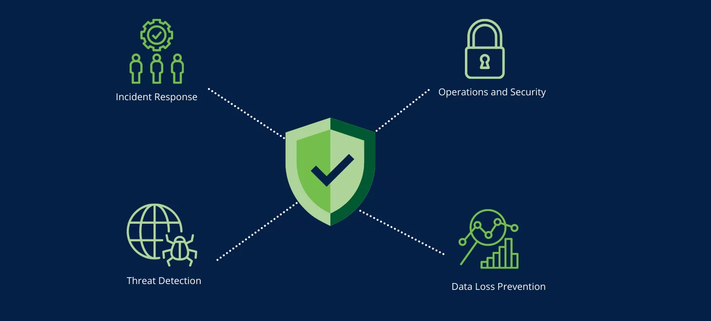

AI-Powered Threat Detection

Project Overview
Developed a machine learning model to detect anomalous behavior in cloud logs with 94% accuracy, reducing false positives by 70% compared to traditional rule-based systems.
Key Features
- Real-time analysis of CloudTrail, VPC Flow, and GuardDuty logs
- Anomaly detection using LSTM neural networks
- Automated alerting and integration with Slack and PagerDuty
- Self-learning model that adapts to environment changes
Technical Implementation
The system was built using TensorFlow for the ML model, deployed as AWS Lambda functions for scalability, with the following architecture:
Sample Feature Extraction Code
def extract_features(log_entry):
features = {
'api_call_frequency': calculate_call_frequency(log_entry['eventName']),
'time_of_day': get_time_feature(log_entry['eventTime']),
'source_ip_entropy': ip_entropy_score(log_entry['sourceIPAddress']),
'unusual_resource_access': check_resource_pattern(log_entry)
}
return features
def predict_anomaly(features):
model = load_model('threat_detection_model.h5')
prediction = model.predict([features])
return prediction[0] > 0.95Results
- 94% accuracy in detecting real threats
- 70% reduction in false positives
- Average detection time reduced from 4 hours to 8 minutes
- Integrated with existing SIEM tools